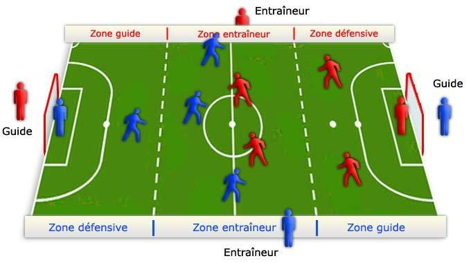
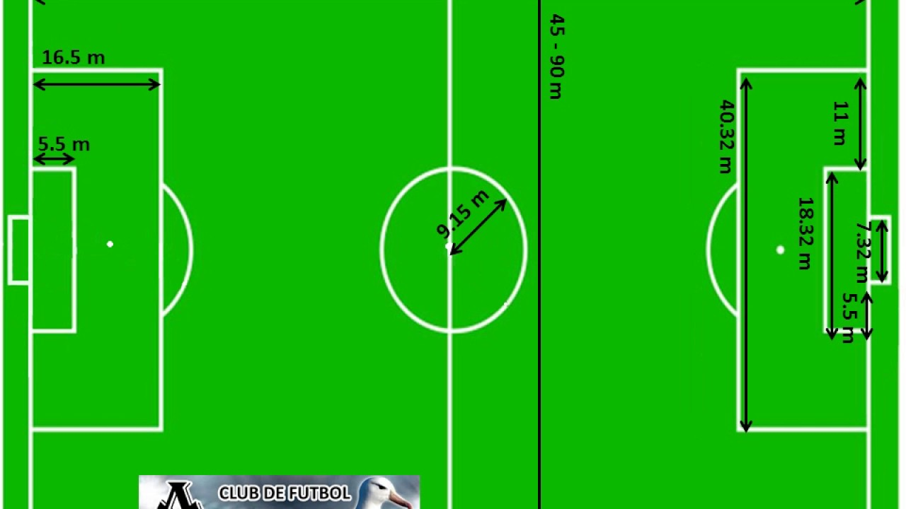

REGLAS
Las reglas del fútbol datan del siglo XIX y es en 1863 cuando se instaura el primer conjunto de reglas

1. Los partidos de fútbol se dividen en dos tiempos, cada uno de 45 minutos, con un descanso de 15.
El árbitro lanza una moneda para decidir el lado de la cancha jugarán.
3. El balón está dentro del juego mientras no haya falta. La pelota está fuera de cancha si cruza la meta o la línea de banda.
4. Se marcará gol cuando el balón pasa la línea de meta y entra al arco, siempre y cuando no haya falta.
5. Se considera fuera de juego (offside) si un jugador le da pase a su compañero y éste está más cerca a la línea de meta opuesta en comparación al balón y al último adversario. En este caso, el árbitro otorgará al rival un tiro libre indirecto (pase a otro jugador).
5. Se considera fuera de juego (offside) si un jugador le da pase a su compañero y éste está más cerca a la línea de meta opuesta en comparación al balón y al último adversario. En este caso, el árbitro otorgará al rival un tiro libre indirecto (pase a otro jugador).
7. El árbitro muestra tarjeta amarilla para amonestar a un jugador (por infringir el reglamento) y una tarjeta roja para expulsarlo (por conducta violenta contra el adversario o impedir un gol con la mano).
El tiro libre reanuda el juego después de una falta
9. Los penales se marcan cuando un jugador comete una infracción dentro del área que defiende y se cobra en favor del equipo contrario.
10. Los saques reanudan el juego desde distintas partes de la cancha, por ello existen tres, con los nombres de donde se realiza:
saque de banda
saque de meta
saque de esquina
medidas de la cacha
Debe tener forma rectangular, siendo su largo entre 90 y 120 metros (100 y 110 metros para partidos internacionales), y su ancho entre 45 y 90 metros (64 y 75 metros para partidos internacionales).

Por lo que respecta a la longitud de los terrenos de fútbol profesional, la FIFA establece en su reglamento que el largo mínimo debe ser 90 metros y un máximo de hasta 120 metros. Los principales campos tienen una longitud de 105 metros.
FIN :D
VOLVER AL INICIO